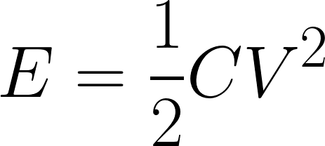
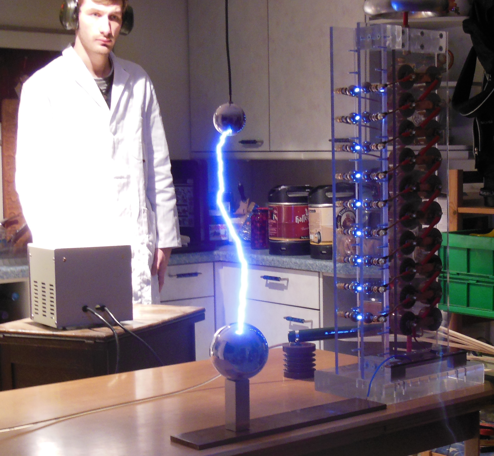
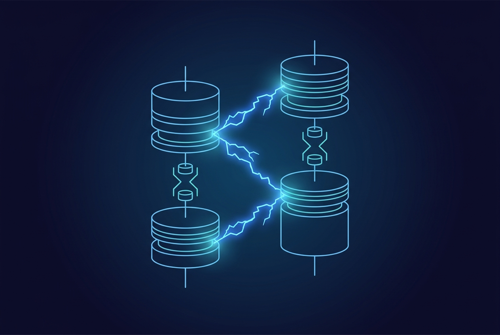
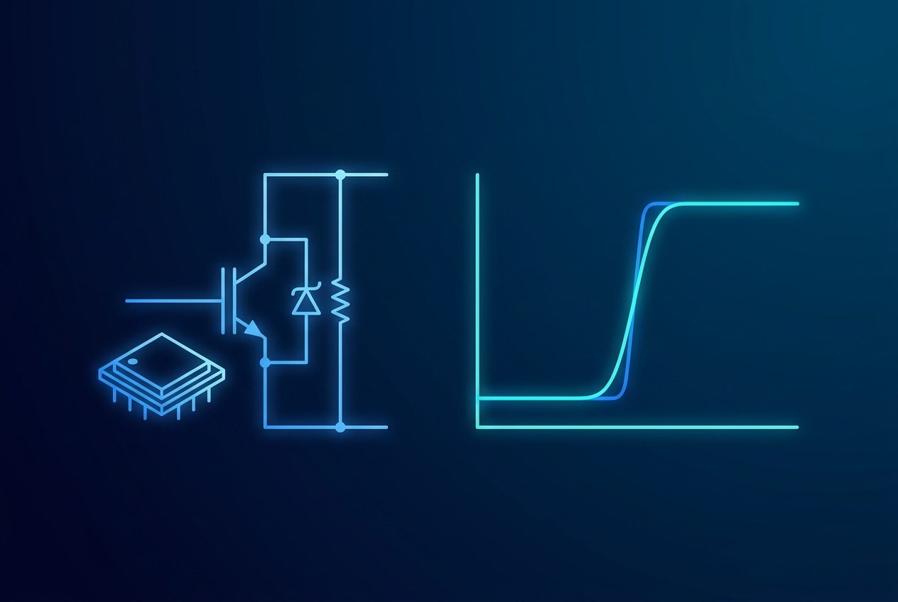
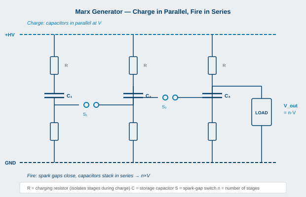

Terms used throughout the book. V1 entries are preserved and expanded; new V2 entries cover wide-bandgap devices, modern diagnostics, and recent application areas.
Amplitude. Peak voltage or current of a pulse, measured at the flat-top region away from the rising and falling edges.
Arc. A self-sustained discharge between two conductors with sufficient potential difference and proximity that the intervening gas conducts electricity. Effectively a controlled or uncontrolled lightning strike. Always undesirable in commercial pulsers.
Bias current. A small DC current applied to a load (typically a laser diode) to keep it just below its operating threshold, so the main pulse turns it on faster. Sometimes called simmer current or dark current.
Bipolar pulser. A pulse generator with both positive and negative output rails, allowing the output to swing between two voltage levels rather than between zero and a single level.
BJT (bipolar junction transistor). A current-controlled transistor. In power electronics, the IGBT (insulated-gate bipolar transistor) is the dominant variant. BJTs proper are rare in modern pulser designs.
Blumlein line. A pair of charged transmission lines that, when switched, deliver a square pulse with amplitude equal to the charge voltage. Used in research-class pulsers above 100 kV.

Capacitor. A passive two-terminal component that stores energy in an electric field between two conductive plates. Capacitors do not conduct DC; they conduct only when the voltage across them changes.
Capacitive divider. A high-voltage probe consisting of two capacitors in series, with the scope measuring across the smaller one. Fast, simple, AC-coupled.
Compliance voltage. The maximum voltage a current pulser can develop across its output. The compliance voltage limits which loads the pulser can drive: if the load forward voltage at the operating current exceeds compliance, the pulser cannot deliver the requested current.
CVR (current-viewing resistor). A low-value, low-inductance resistor placed in series with a current path, used to measure current via Ohm's law (I = V / R).
Device under test (DUT). A device being characterized, qualified, or measured. Common term in pulser-driven semiconductor and component characterization.
Diode. A passive component that conducts current in one direction (forward bias) and blocks it in the reverse direction.
Droop. The slow downward sag of pulse amplitude during the flat top, caused by the energy-storage capacitor discharging into the load.
DSRD (drift-step-recovery diode). A specialty diode that produces a fast voltage rise when forced from forward to reverse bias. Used in sub-nanosecond rise-time pulsers.
Duty cycle. The fraction of time the pulse is on, expressed as a percentage or a fraction between 0 and 1.
EMC (electromagnetic compatibility). The set of practices ensuring that equipment operates correctly in its electromagnetic environment without causing interference to other equipment.
Energy store. The capacitor bank or inductor that holds the energy released during the pulse. The store is recharged between pulses.
ESL (equivalent series inductance). The parasitic inductance of a real capacitor, which limits how fast current can be drawn from it.
ESR (equivalent series resistance). The parasitic resistance of a real capacitor, which causes dissipation during current flow.
FET (field-effect transistor). A voltage-controlled transistor. In power electronics, the MOSFET is the dominant FET variant.
Flatness. A measure of pulse-top fidelity, expressed as the percentage variation of pulse amplitude across the flat-top region.
Floating. Operating with a circuit's reference at a voltage other than ground. Floating loads are common; floating instruments (especially scopes) are dangerous.
FMCW (frequency-modulated continuous-wave). A LiDAR or radar architecture that uses a chirped continuous-wave signal rather than discrete pulses. Allows simultaneous range and velocity measurement.
GaN HEMT. Gallium-nitride high-electron-mobility transistor. A wide-bandgap switching device with sub-nanosecond switching speed at moderate voltages.
Half-bridge. A pulser topology with two switches in series, with the load tied to the midpoint between them. Provides symmetric rise and fall times.
HEMP (high-altitude electromagnetic pulse). The intense electromagnetic pulse produced by a high-altitude nuclear detonation, used as a threat model for hardening electronic systems.
HPM (high-power microwave). Microwave radiation at gigawatt power levels, generated by pulsed electrical drivers feeding vacuum electron devices.
IGBT. Insulated-gate bipolar transistor. A switching device combining MOSFET-like gate drive with bipolar-like voltage hold-off and current density. Slower than MOSFETs, faster than thyratrons.
Impedance (Z). A circuit's opposition to current flow, including resistive, capacitive, and inductive components. Frequency-dependent for capacitors and inductors.
Inductive voltage adder (IVA). A pulser topology where multiple pulse transformers connect their secondaries in series, with each primary independently driven, summing voltages at the load.
Inductor. A passive two-terminal component that stores energy in a magnetic field when current flows through it. Resists changes in current.
IRE (irreversible electroporation). A medical technique that uses pulsed electric fields to ablate tissue (typically tumors) through non-thermal cell-membrane disruption.
Jitter. The variation in timing of an otherwise repetitive signal. Quantified as the standard deviation of trigger-to-edge timing across many pulses.
Laser diode. A semiconductor laser whose output power is proportional to forward current. Common load for high-current pulsers.
LiDAR. Light detection and ranging. A pulsed-laser equivalent of radar, used for ranging and 3D imaging.
Load. An electrical component or system consuming electric power from a source.


Marx generator. A pulser topology with capacitors charged in parallel and switched into series at pulse time, multiplying the output voltage. Original spark-gap version invented 1924; modern semiconductor versions use MOSFETs or IGBTs.
MOSFET. Metal-oxide-semiconductor field-effect transistor. Voltage-controlled switching device, dominant in modern commercial pulsers up to a few kilovolts per die.
Ohm's law. V = I × R. The fundamental relationship between voltage, current, and resistance.
Ohm's law for power. P = V × I. Power equals voltage times current. The driving relationship for thermal management in pulsers.
Optical isolator. A component that transmits a signal between two galvanically isolated circuits using light. Common in pulser trigger paths to break ground loops.
Overshoot. The amount by which a pulse exceeds its target amplitude immediately after the rising edge, before settling.
PCSS (photoconductive semiconductor switch). A switch that closes when illuminated by a laser pulse. Used for picosecond-rise-time pulsers in research and specialty markets.
PEF (pulsed electric field). A pulsed-electric-field treatment used in food processing, water disinfection, and medical applications.
PFN (pulse-forming network). A ladder of inductors and capacitors that emulates a charged transmission line. Delivers a square pulse with duration set by the network's electrical length.
PID (proportional-integral-derivative). A standard control-loop technique used in current-pulser regulation. The PCX-7500 uses a PID-controlled current loop.
Pockels cell. An electro-optical device that modulates light polarization in response to applied electric field. Used as a Q-switch in lasers.
PRF (pulse repetition frequency). The rate at which pulses repeat, in pulses per second (Hz).
Pseudospark. A gas-discharge switch with hollow-cathode geometry, faster and longer-lived than conventional spark gaps.
Pulse width. The duration of the pulse. Typically measured at 50% of full amplitude (FWHM, full width at half maximum); some industries use other conventions.
Q-switch. A device that controls the quality factor of a laser cavity, allowing energy to accumulate and then release as a high-power pulse.
Repetition rate. Same as PRF.
Resistive divider. A high-voltage probe consisting of two resistors in series, with the scope measuring across the smaller one.
Ringing. Damped oscillation on the rising and falling edges of a pulse, typically caused by stray inductance interacting with capacitance.
Rise time. The time for a pulse to climb from 10% to 90% of full amplitude. Other conventions exist (20%-80%, 50%-50%); document which is in use.
Rogowski coil. A flexible toroidal current sensor that wraps around a conductor without breaking the circuit. AC-coupled; cannot measure DC.
Saturable reactor. A magnetic component that has high inductance below saturation flux and low inductance above it. Used as a switch in magnetic pulse compression.
SiC MOSFET. Silicon-carbide MOSFET. A wide-bandgap switching device with higher voltage capability and faster switching than silicon at the same rating.
Solid-state Marx. A modern Marx generator using semiconductor switches in place of spark gaps.
SOS (silicon opening switch). A specialty diode that opens to produce a fast voltage rise across the open circuit. Sister technology to DSRDs.


Spark gap. Two electrodes separated by a gap, switched by initiating breakdown of the gas (or vacuum) between them. Used in very-high-voltage pulsers.
Stored energy. The energy held in an energy store (capacitor or inductor) ready to deliver during the pulse. Equals ½ × C × V² for a capacitor.
Stripline. A transmission line consisting of a conductor between two ground planes, used for low-impedance high-current connections in pulsers.
Switch. The active element in a pulser that transfers energy from the store to the load on command. Determines rise time, voltage, and current capability.
Termination. A resistor (or reactive network) at a cable's load end, sized to match the cable impedance and absorb reflections.
Thyratron. A gas-filled tube switch with hydrogen as the working gas. Defining switch of the 1942-1990 pulser era; still in service in some applications.
Transformer. A passive component that transfers energy between circuits via magnetic coupling, typically with voltage step-up or step-down.
Transmission line. A conductor pair (typically coaxial or twin-line) along which signals propagate with a characteristic impedance and a finite delay.
Trigger. The signal that commands a pulser to fire a pulse.
Undershoot. The amount by which a pulse falls below its target before settling.
Voltage pulser. A pulse generator that controls output voltage; the load determines the current.
Wide-bandgap (WBG). Refers to semiconductor materials (SiC, GaN, others) with a larger bandgap than silicon, enabling higher breakdown fields, higher operating temperatures, and faster switching.
End of Appendix A.